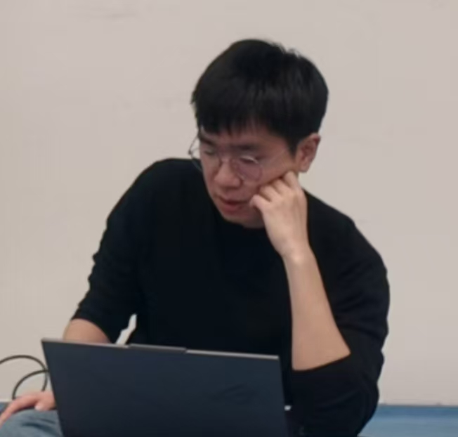

个人简介
你好！我是陈炫华，一名热爱技术与创新的硕士生。 在我的研究生阶段，我研究的领域包括：机器人的视觉定位（MVS、SLAM）、环境的三维重建与感知（NeRF、3DGS）以及深度学习的相关技术。
我的研究兴趣在于3D视觉和机器人技术， 希望在计算机中构建一个反映人类视觉感知的真实世界表示，并且充分利用2D图像中的潜在信息。 我相信如果我们能够从图像或视频中重建出3D/4D场景并获取其中的有效信息， 这可以帮助机器人像人类一样感知世界并更加有效地与世界进行互动。
教育经历
论文发表
-
VSS-SLAM: Voxelized Surfel Splatting for Geometally Accurate SLAM
ICRA 2025
Xuanhua Chen, Yunzhou Zhang*, Zhiyao Zhang, Guoqing Wang, Bin Zhao, Xingshuo Wang